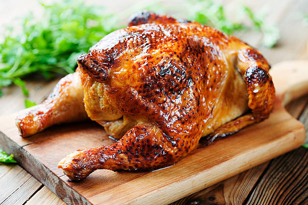

Odin Unbelievable Chicken

Description:
Ingredients:
- 1/4 cup cider vinegar
- 3 tablespoons prepared coarse-ground mustard or to taste
- 3 cloves garlic, peeled and minced
- 1 lime, juiced
- and more ...
Steps:
-
Mix cider vinegar, mustard, garlic, lime juice, lemon juice, brown
sugar, salt, and pepper together in a large glass or ceramic bowl. Whisk
in olive oil.
Add chicken and toss evenly to coat. Cover, and marinate in the
refrigerator for 8 hours to overnight.
- Preheat an outdoor grill for high heat.
-
Lightly oil the grill grate. Place chicken on the preheated grill, and
cook 6 to 8 minutes per side, until juices run clear. Discard any
remaining marinade.
Back to the MainPage